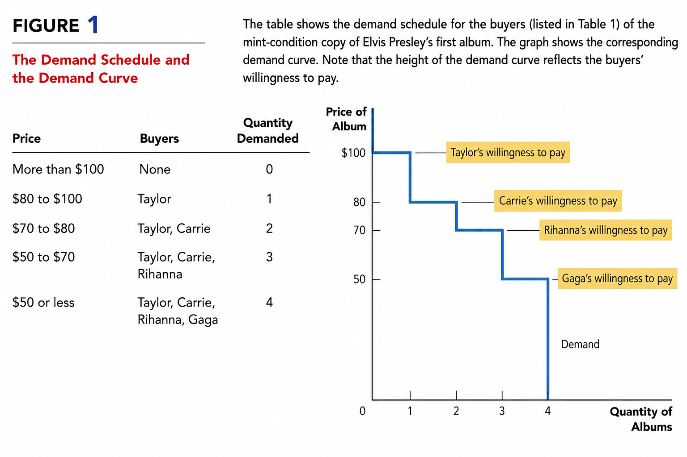
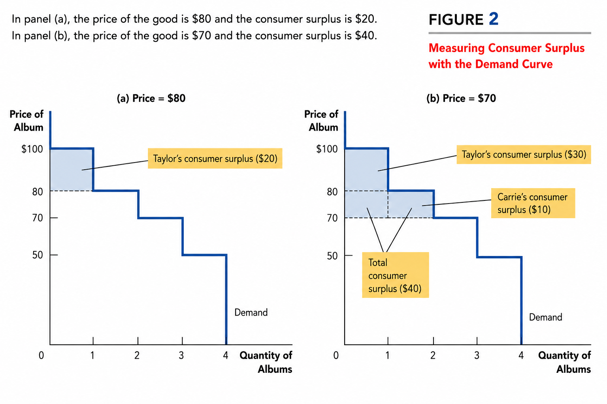
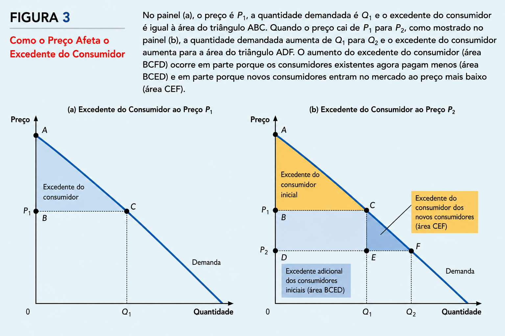
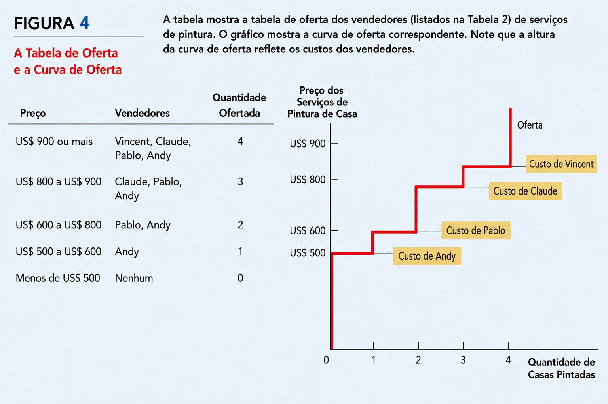
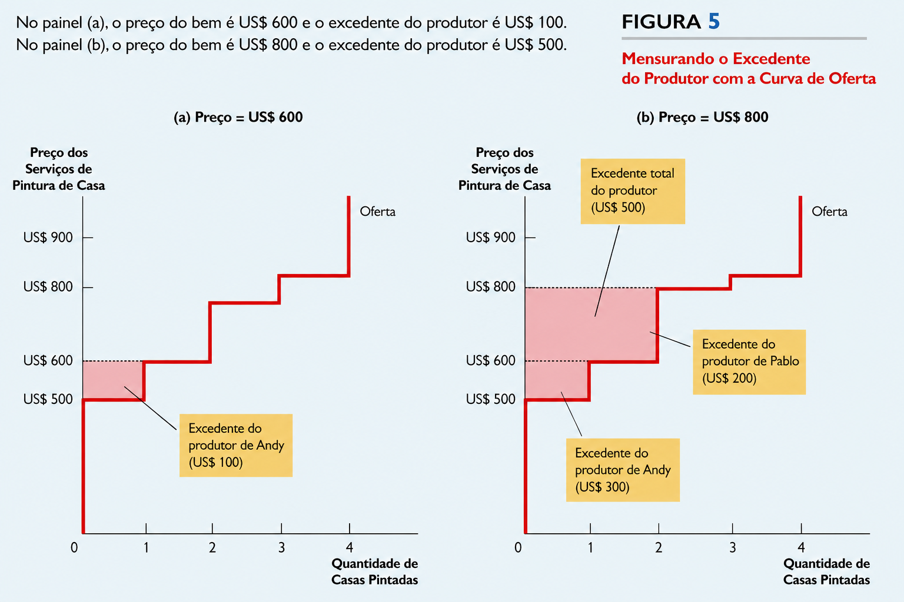
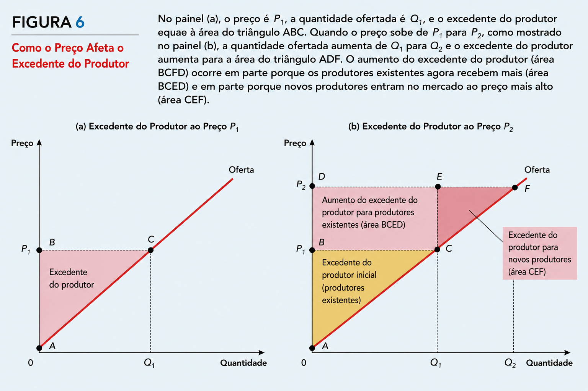
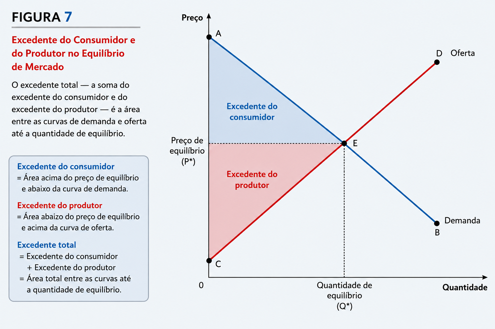
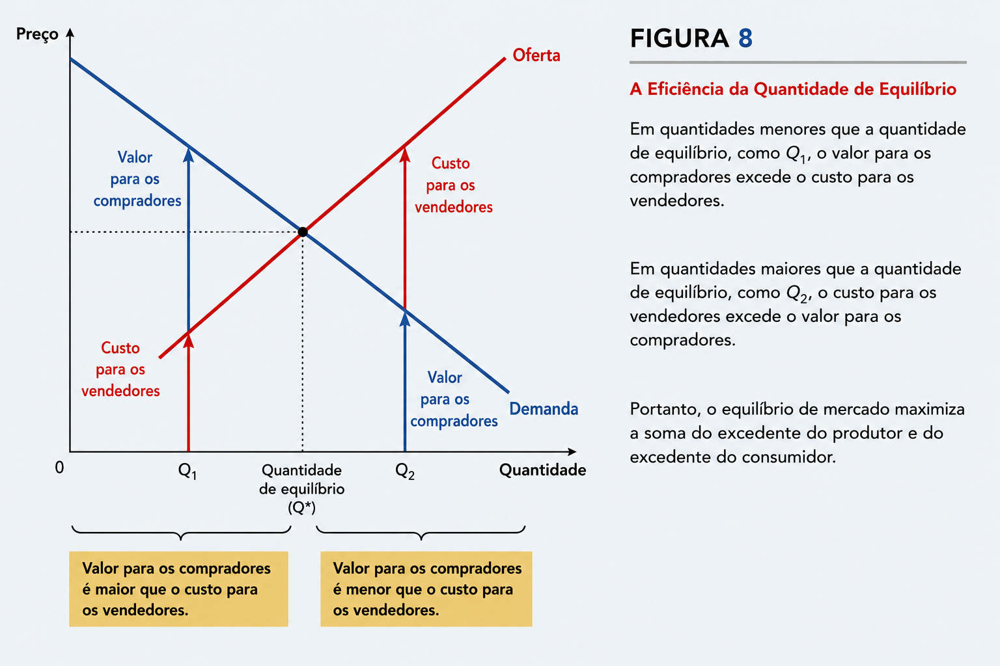
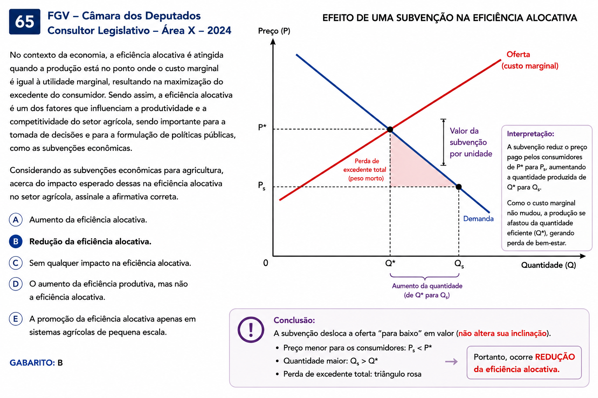

Aula 7 - Consumidores, Produtores e a eficiência do mercado
03 — Usando a curva de demanda para medir o excedente do consumidor
04 — Como uma queda nos preços aumenta o excedente do consumidor
05 — O que o excedente do consumidor mede
06 — Custos e a disposição à vender
07 — Usando a curva de oferta para medir o excedente do produtor
08 — Como um aumento nos preços aumenta o excedente do produtor
09 — O planejador social benevolente
10 — Avaliando o equilíbrio de mercado
Existe um “preço certo” para a sociedade?
🦃 Imagine o mercado de peru no Dia de Ação de Graças:
Consumidores gostariam de pagar menos. Produtores gostariam de receber mais.
O mercado determina o preço pelo equilíbrio entre oferta e demanda.
Mas surge uma nova pergunta:
A quantidade produzida e consumida no equilíbrio é pequena demais, grande demais ou é a quantidade “certa”?
Até aqui, nossa análise foi principalmente positiva:
Como os mercados funcionam?
Agora, avançamos para uma questão normativa:
Os resultados produzidos pelo mercado são desejáveis para a sociedade?
💡 Economia do Bem-Estar estuda como a alocação de recursos afeta o bem-estar econômico.
Neste capítulo, veremos que, sob determinadas condições, o equilíbrio competitivo:
\[ \boxed{\text{maximiza os ganhos totais de consumidores e produtores}} \]
➡️ Para entender por quê, estudaremos Excedente do Consumidor, Excedente do Produtor e Eficiência de Mercado.
Imagine que você possui um disco raro de Elvis Presley e decide vendê-lo em um leilão.
Quatro compradores estão interessados, mas cada um atribui um valor diferente ao disco:
| Comprador | Disposição a pagar |
|---|---|
| Taylor | US$ 100 |
| Carrie | US$ 80 |
| Rihanna | US$ 70 |
| Gaga | US$ 50 |
💡 Disposição a pagar (DAP) é o valor máximo que um consumidor está disposto a pagar por um bem.
Se Preço < DAP → compra. Se Preço > DAP → não compra. Se Preço = DAP → é indiferente.
E se houver apenas 1 disco?
O leilão termina em aproximadamente US$ 80.
Taylor compra, pois possui a maior disposição a pagar:
\[ DAP = \$100 \qquad P = \$80 \]
Seu benefício é:
\[ \boxed{EC = DAP-P = 100-80=\$20} \]
Esse benefício é chamado de Excedente do Consumidor:
\[ \boxed{\text{EC}=\text{Disposição a Pagar}-\text{Preço Pago}} \]
🎯 Interpretação: o excedente do consumidor mede o benefício que o comprador obtém ao participar do mercado.
Como a curva de demanda representa a disposição a pagar, podemos utilizá-la para medir o Excedente do Consumidor.

Como os consumidores preferem pagar menos, uma queda no preço aumenta seu bem-estar. O excedente do consumidor permite medir exatamente esse ganho.
Com o preço menor, novos compradores entram no mercado, aumentando a quantidade de (Q_1) para (Q_2).
Eles também passam a obter excedente do consumidor.
Uma queda no preço beneficia tanto quem já comprava o produto quanto consumidores que passam a comprá-lo devido ao preço menor.


Nosso objetivo é utilizar o excedente do consumidor para avaliar os resultados produzidos pelo mercado.
\[ \boxed{EC=\text{Disposição a Pagar}-\text{Preço Pago}} \]
💡 A disposição a pagar revela quanto o próprio consumidor acredita que determinado bem vale para ele.
Portanto, o excedente do consumidor mede:
O benefício recebido pelo consumidor, segundo sua própria percepção.
Quando é uma boa medida?
Se assumirmos que:
os consumidores são racionais; conhecem suas próprias preferências; e essas preferências devem ser respeitadas;
então:
\[ \boxed{\text{Maior Excedente do Consumidor} \Rightarrow \text{Maior Bem-Estar dos Consumidores}} \]
⚠️ Mas existem exceções
A disposição a pagar pode não representar adequadamente o bem-estar quando as escolhas do consumidor não refletem seus próprios interesses.
O livro utiliza como exemplo o consumo de heroína por dependentes químicos: uma disposição a pagar elevada não significa necessariamente que o consumo gere elevado bem-estar social.
🎯 Ideia-chave: em grande parte da análise econômica, assumimos que os próprios consumidores são os melhores juízes do benefício que recebem dos bens que consomem.
🏠 Imagine que você quer pintar sua casa e solicita propostas de quatro pintores.
Cada pintor possui um custo diferente para realizar o serviço:
| Vendedor | Custo |
|---|---|
| Vincent | US$ 900 |
| Claude | US$ 800 |
| Pablo | US$ 600 |
| Andy | US$ 500 |
💡 Custo representa o custo de oportunidade do vendedor: inclui tanto os gastos diretos quanto o valor do tempo e dos recursos empregados.
Assim:
\[ P > Custo \Rightarrow \text{vende} \] \[ P < Custo \Rightarrow \text{não vende} \] \[ P = Custo \Rightarrow \text{indiferente} \] Leilão de 1 serviço
Os pintores competem oferecendo preços cada vez menores. Andy aceita realizar o serviço por aproximadamente US$ 600.
Como seu custo é de US$ 500:
\[ EP = P-Custo \] \[ EP_{\text{Andy}} = 600-500=\boxed{\$100} \]
Esse benefício é chamado de Excedente do Produtor:
\[ \boxed{\text{Excedente do Produtor} = \text{Preço Recebido}-\text{Custo}} \]
🎯 O excedente do produtor mede o benefício que os vendedores obtêm ao participar do mercado.


Assim como a curva de demanda representa a disposição a pagar dos consumidores, a curva de oferta representa os custos dos produtores.
💡 Em cada quantidade, a altura da curva de oferta indica o custo do vendedor marginal.
Vendedor marginal é aquele que seria o primeiro a deixar o mercado caso o preço diminuísse.
Por exemplo:
\[ Q=3 \Rightarrow Custo_{\text{marginal}}=\$800 \]
Nesse ponto, Claude é o vendedor marginal.
Medindo o Excedente do Produtor
Para cada produtor:
\[ EP=P-Custo \]
Se o preço de mercado for US$ 600, apenas Andy produz:
\[ EP_{\text{Andy}}=600-500=\boxed{\$100} \]
Se o preço for US$ 800, Andy e Pablo produzem:
\[ EP_{\text{Andy}}=800-500=\$300 \] \[ EP_{\text{Pablo}}=800-600=\$200 \]
Portanto:
\[ EP_{\text{Total}}=300+200=\boxed{\$500} \]
📊 Graficamente:
\[ \boxed{ \text{Excedente do Produtor} = \text{área abaixo do preço e acima da curva de oferta} } \]
🎯 A lógica é simples: a oferta representa o custo; a diferença entre o preço recebido e esse custo representa o ganho do produtor.
Como os produtores preferem receber preços maiores, um aumento no preço aumenta seu bem-estar. O excedente do produtor permite medir esse ganho.
Suponha que o preço aumente de (P_1) para (P_2)
Como consequência, a quantidade ofertada aumenta
Os produtores que já vendiam (Q_1) agora recebem um preço maior.
O preço maior torna viável a produção para novos vendedores, aumentando a quantidade ofertada de (Q_1) para (Q_2).
Um aumento no preço beneficia tanto os produtores que já vendiam quanto aqueles que passam a produzir devido ao preço mais alto.

Como avaliar se o resultado de um mercado é desejável para a sociedade?
Imagine um planejador social benevolente: alguém que busca maximizar o bem-estar econômico de todos.
Uma medida natural desse bem-estar é o Excedente Total:
\[ \boxed{ET = EC + EP} \]
Sabemos que:
\[ EC=\text{Valor para os compradores}-\text{Valor pago} \] \[ EP=\text{Valor recebido}-\text{Custo dos vendedores} \]
Como o que os compradores pagam é exatamente o que os vendedores recebem:
\[ \boxed{ET=\text{Valor para os compradores}-\text{Custo dos vendedores}} \] Eficiência
Uma alocação é eficiente quando:
\[ \boxed{\text{Excedente Total é maximizado}} \]
Isso exige que:
os bens sejam produzidos pelos vendedores de menor custo; os bens sejam consumidos pelos compradores com maior disposição a pagar;
todas as trocas em que o valor para o comprador excede o custo do vendedor sejam realizadas.
Eficiência × Equidade
🥧 Pense nos ganhos de mercado como um bolo:
Eficiência → tornar o bolo o maior possível.
Equidade → decidir como dividir o bolo entre os indivíduos.
🎯 Neste capítulo, nosso foco será a eficiência: o mercado consegue maximizar o excedente total?


No equilíbrio competitivo, o preço determina quem compra, quem vende e quanto é transacionado.
\[ \boxed{Q_d=Q_s=Q^*} \]
O Excedente Total corresponde à área entre as curvas de demanda e oferta até a quantidade de equilíbrio:
\[ \boxed{ET=EC+EP} \] Três resultados fundamentais dos mercados competitivos
Participam do mercado os compradores cuja:
\[ DAP \geq P^* \]
➡️ O produto é alocado aos consumidores com maior disposição a pagar.
Participam os vendedores cujo:
\[ Custo \leq P^* \]
➡️ A produção é alocada aos produtores que conseguem produzir ao menor custo.
Antes do equilíbrio:
\[ DAP_{\text{marginal}}>Custo_{\text{marginal}} \]
➡️ produzir uma unidade adicional aumenta o excedente total.
Depois do equilíbrio:
\[ DAP_{\text{marginal}}<Custo_{\text{marginal}} \]
➡️ produzir uma unidade adicional reduz o excedente total.
Portanto:
\[ \boxed{Q^*=\text{Quantidade que maximiza o Excedente Total}} \] Por que o Equilíbrio Maximiza o Excedente Total?
A demanda representa o valor atribuído pelos consumidores.
A oferta representa o custo de produção.
Se (Q<Q^*) \[ \text{Valor para o comprador}>\text{Custo do vendedor} \]
Existem ganhos de troca ainda não realizados.
➡️ Aumentar a produção aumenta o excedente total.
Em (Q=Q^*) \[ \boxed{\text{Valor marginal}=\text{Custo marginal}} \]
O excedente total é máximo.
Se (Q>Q^*) \[ \text{Valor para o comprador}<\text{Custo do vendedor} \]
Produzir essas unidades custa mais do que o valor que elas geram.
➡️ Reduzir a produção aumenta o excedente total.
\[ \boxed{ Q<Q^* \Rightarrow \uparrow Q \qquad Q=Q^* \Rightarrow ET_{\max} \qquad Q>Q^* \Rightarrow \downarrow Q } \] Mercado, Laissez-Faire e a Mão Invisível
O resultado é importante:
Sob as condições do modelo competitivo, o equilíbrio de mercado constitui uma alocação eficiente dos recursos.
O planejador social benevolente não precisa determinar:
quem deve consumir; quem deve produzir; quanto deve ser produzido.
O próprio sistema de preços coordena essas decisões.
Mas atenção \[ \boxed{\text{Eficiência do mercado} \neq \text{mercados são sempre perfeitos}} \]
Esse resultado depende das hipóteses do modelo competitivo. Externalidades, poder de mercado, assimetrias de informação e outras falhas de mercado podem fazer com que o equilíbrio deixe de maximizar o bem-estar social.
As ferramentas da Economia do Bem-Estar mostram que, sob determinadas condições, mercados competitivos alocam recursos de forma eficiente:
\[ \boxed{\text{Equilíbrio de mercado} \Rightarrow \text{Excedente Total Máximo}} \]
Mesmo buscando seus próprios interesses, compradores e vendedores são coordenados pelo sistema de preços — a “mão invisível” — até uma alocação eficiente.
Mas esse resultado depende de hipóteses
⚠️ Quando algumas dessas condições não são satisfeitas, o equilíbrio de mercado pode deixar de ser eficiente.
Quando uma empresa, consumidor ou pequeno grupo consegue influenciar os preços:
\[ \text{Poder de mercado} \Rightarrow P \text{ e } Q \text{ afastam-se do resultado competitivo} \]
Ex.: monopólios e oligopólios.
As decisões de compradores e vendedores podem afetar terceiros que não participam diretamente da transação.
🏭 Exemplo: poluição
Nesse caso:
\[ \text{Custo para a sociedade} \neq \text{Custo considerado pelo produtor} \] Falha de Mercado
Quando o mercado, por si só, não consegue alocar recursos eficientemente, temos uma:
\[ \boxed{\text{Falha de Mercado}} \]
Nessas situações, políticas públicas podem, potencialmente, aumentar a eficiência econômica.
🎯 A mensagem não é que mercados são sempre eficientes, mas que precisamos identificar quando as condições para a eficiência estão presentes — e quando elas falham.
Questões de concurso
Em relação aos conceitos de excedente do consumidor e do produtor, analise as afirmativas:
I. Se o preço de um bem cair, o excedente do consumidor aumenta por dois canais: aumento do excedente dos consumidores que já compravam o bem e o excedente gerado para os novos consumidores.
Se o preço de um bem cair, o excedente do produtor aumenta por dois canais: aumento do excedente para os produtores que já vendiam o bem e o excedente gerado dos novos produtores.
O excedente total da economia é máximo no ponto de equilíbrio entre oferta e demanda, sem imposição de impostos.
Assinale:
Gabarito: D.
Considere um mercado cuja demanda é
\[ q_D=100p^{-2} \]
e cuja oferta é
\[ q_S=800p. \]
No primeiro equilíbrio:
O excedente do produtor é de 100 unidades.
( ) Certo ( ) Errado
Gabarito: V
Usando o mesmo mercado, ocorre um choque de oferta, fazendo a oferta mudar de
\[ q_S=800p \]
para
\[ q_S=100p. \]
Julgue:
Na passagem do primeiro para o segundo equilíbrio, apesar de o bem-estar social ter diminuído, o aumento de preço fez o excedente do produtor aumentar.
( ) Certo ( ) Errado
Gabarito: F
Em um mercado de concorrência perfeita:
\[ P=600-5Q_d \] \[ P=100+20Q_s \]
Julgue:
No ponto de equilíbrio, o excedente do produtor é o quádruplo do excedente do consumidor.
( ) Certo ( ) Errado
Gabarito: V
No contexto da economia, a eficiência alocativa é atingida quando a produção está no ponto onde o custo marginal é igual à utilidade marginal, resultando na maximização do excedente do consumidor. Sendo assim, a eficiência alocativa é um dos fatores que influenciam a produtividade e a competitividade do setor agrícola, sendo importante para a tomada de decisões e para a formulação de políticas públicas, como as subvenções econômicas.
Considerando as subvenções econômicas para agricultura, acerca do impacto esperado dessas na eficiência alocativa no setor agrícola, assinale a afirmativa correta.

Gabarito: B